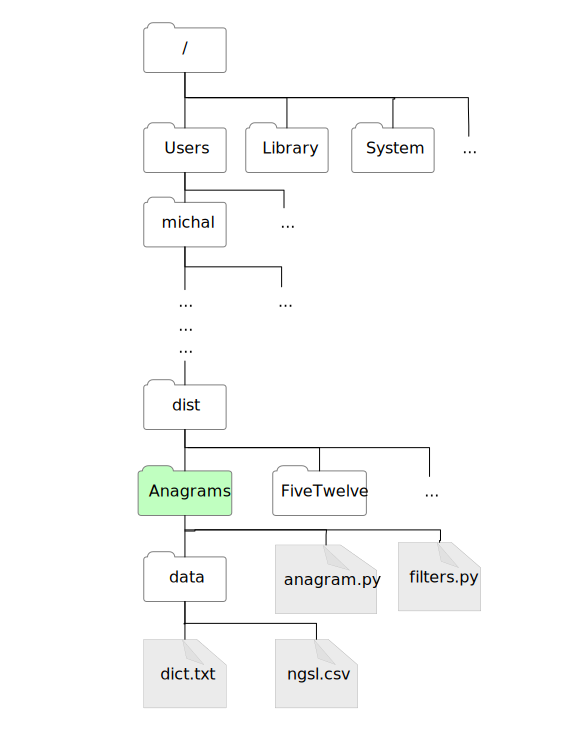
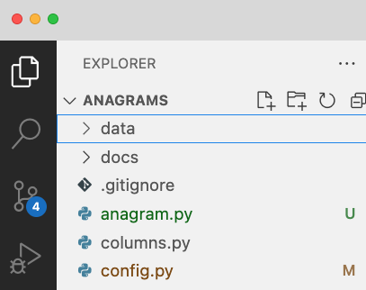
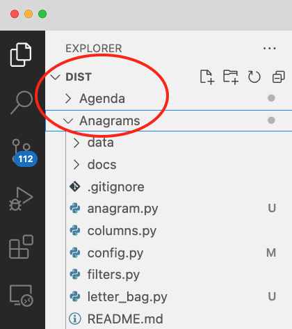

File paths#
Why is Python saying it can’t find my file?
You can skip to the section on relative paths if you are in a hurry, but the background material on memory hierarchy and file systems are useful in understanding what relative paths are and why you should be using them.
The memory hierarchy#
Memory technologies over time have varied from ripples in tubs of mercury to tiny capacitors to differences in reflectivity or magnetic orientation in spinning disks. Through decades of evolution, computers have used different memory technologies together, combining small amounts of very expensive, very fast memory with much larger amounts of cheaper, slower memory. This is called the memory hierarchy.
While the memory hierarchy may include several layers, a key division is between faster volatile memory, which lasts only while a program is executing, and slower persistent memory that can last not only between program executions but even when the computer is powered down. Persistent memory is also called mass storage. For historical reasons, persistent mass storage may also be referred to as disk, despite physical disk drives having been replaced with other technology such as flash RAM in thumb drives.
If one program stores information in mass storage and another program is to use it, we must have a naming scheme that both programs can share. Thus mass storage is typically organized as named files. And since there can be thousands or millions of files, we need an organizing structure for those files. That is the job of a file system.
File systems#
A file system is a component of a computer operating system, bridging between the logical view of file access presented to users and programs and the physical interface provided by mass storage devices. File systems vary among operating systems, and may be replaced over time. For example, the original FAT file system of Windows and DOS is still sometimes used on portable drives, but has largely been replaced by HPFS and then by NTFS. Apple operating systems likewise support the FAT file system but mostly use APFS. The file system is not entirely hidden from the user (e.g., a file system can restrict the lengths and characters permitted in file names). But aside from these restrictions, we can mostly ignore the underlying file system implementation except when we are initializing (formatting and partitioning) a new drive. We can focus just on the abstract, logical view of the file system that our operating system presents us.
Most modern operating systems provide a logical view of the underlying file system that complies with the POSIX standard. Originally POSIX was designed to support compatibility among various flavors of the Unix operating system. Today not only Linux and MacOS (both flavors of Unix) but also Windows file systems are POSIX compliant. POSIX compliance allows us to write Python programs that can access file systems in a manner that is mostly independent of operating system.
Directory structures and paths#
A POSIX-compliant file system is organized as a hierarchy of directories containing other directories and files. Directories are also called “folders”. The top level of the hierarchy might be a “drive” like “C:” in Windows. On Unix systems including Linux and MacOS it is the “root directory” with the single character name “/”.
The full, unambiguous name of a directory or file is called an absolute path. It is a sequence of directions for traversing the hierarchy of directories from the very top. For example, there is a file on this computer with the path:
/Users/michal/Dropbox/25W-211/projects/dist/Anagrams/anagram.py
This is literally a “path” in the sense of a sequence of directions:
“Starting at the root, look in Users, and from there look in
“michal”, and from there look in “Dropbox”, and …” all the way
down to the file named anagram.py.
Absolute paths are unwieldy. You wouldn’t want to write import m
with m being such a long name. Absolute paths are also
not portable:
If you
download the Anagrams project from Github, the absolute path from
the root of your file system to your copy of anagram.py will not
not be the same. You probably don’t even have a directory with the
path /Users/michal/. If you are using MacOS, you might have one
named /Users/yournamehere, and if you are using Windows even the
very first part of any absolute path will be different. Problem!
Relative paths#
The solution to the problem of long, non-portable absolute paths to files is to use relative paths.
If someone asked you for
directions to the library, you would start those directions
from where you are,
where they are, or some designated starting point (“from the
bookstore, cross Kincaid street to campus”). It’s the same with
file paths: We give paths relative to an agreed starting point.
While the absolute path to anagrams.py on my computer will be
different from the absolute path on your computer, the steps
starting from the project directory are the same. A relative path
from a known starting point can be shorter and independent of the
absolute path to the project.
Where do we start?#
There are two kinds of files we might look for in a Python program, with different conventions for the start of a path.
Modules to import. Python tries starting the path in multiple places, including system libraries where standard Python modules are installed. The first place it looks is the directory that contains the program you are running. If the path starting there leads to the module you tried to import, it is satisfied and stops looking elsewhere.
Data files, which you access with the
openfunction. The relative paths you specify with open start at the current working directory, which may be different from the project directory containing your source file.
Beginning students often encounter problems opening data files with Python. When students encounter a “File not found” error while opening a file, the typical problem is that the current working directory is not the project directory. This especially happens when they first move from using the simple IDLE development environment to a more complex IDE like PyCharm or VS Code. IDLE sets the current working directory to be the same as the directory containing the program being executed. PyCharm and VS Code do not.
Consider the following diagram which shows the parts of the my file
system including the path from the root (“/”) directory to the
Anagrams project directory. Suppose my corrent working directory
is Anagrams. If my main program anagram.py
attempts to open the relative path data/dict.txt, the search will
start at Anagrams, proceed to data, and find dict.txt, as it
should.

I can tell that VS Code is open on the right directory by looking at the “explorer” section:

Suppose, on the other hand, that I have VS Code open on dist, the
directory that contains Agenda.

Now open("data/dict.txt", "r") will not work,
because it
will try to
start the path at dist and not at Anagrams. It will look within
dist for a directory called data, and will not find it. It does
not search further to find it. I will get a “File not found”
exception.
This is a common problem we see when students begin using an IDE
like PyCharm or VS Code. Some students create a one directory for
all their class projects, and open that directory in their IDE.
Some students accidentally create two levels of directory, e.g.,
Agenda/Agenda-master. This is an easy mistake to make if you
create a folder like Agenda and then expand a project zip file
within it. It can be confusing because VS Code or PyCharm appears
to be open on a folder with the right name, but it is actually still
on an enclosing folder.